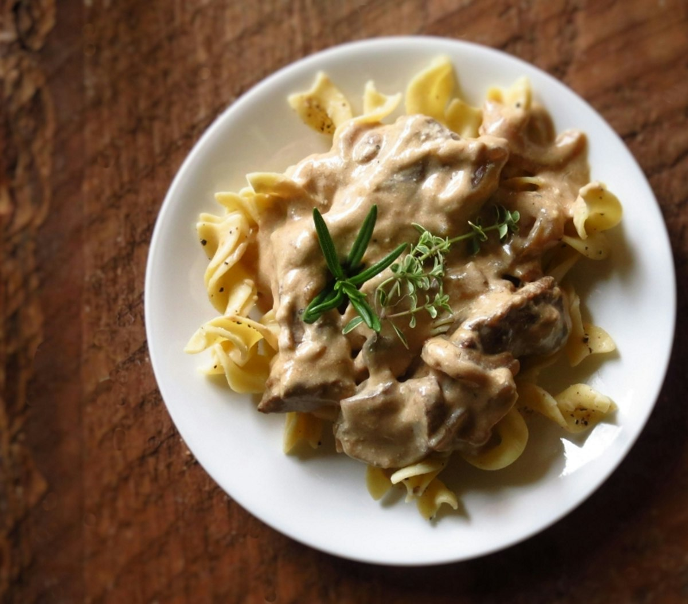

Beef Stroganoff
Fast-seared steak strips and browned mushrooms in a mustard and sour cream sauce, over buttered egg noodles.

Stroganoff has a reputation as a heavy dish, which is usually the result of stewing the beef. It is not a stew. The strips want ninety seconds in a very hot pan and then to be taken out entirely while the sauce is built, going back in only at the end to warm through. The other rule is that sour cream must never boil, or it curdles into grains you cannot whisk out. Both rules are about restraint, and both take less time than doing it wrong.
Ingredients
Quantities scale automatically. Cooking times stay the same.
For the beef
For the sauce
To serve
Equipment
- Large heavy skillet
- Large pot for the noodles
- Tongs
Method
-
1
Dry and season the beef
Pat the strips thoroughly dry and season with the salt and pepper. Wet meat will not brown, and browning is most of the flavour in a dish this quick.
-
2
Sear in batches
Heat the oil in a large skillet over high until it shimmers. Sear the beef in two or three batches, 60-90 seconds a batch, turning once. It should be brown outside and pink within. Move each batch to a plate.
-
3
Brown the mushrooms
Lower to medium-high, add the butter and the onion and cook 5 minutes. Add the mushrooms and leave them undisturbed for 3-4 minutes to colour before stirring. Cook until their water has evaporated and they are properly golden.
-
4
Make the sauce base
Stir in the garlic for a minute, then the flour, and cook 1 minute more. Pour in the stock while stirring, scraping the base clean, then add the mustard and Worcestershire. Simmer 4-5 minutes until it thickens enough to coat a spoon.
-
5
Add the sour cream off the boil
Take the pan off the heat and stir in the sour cream. Return it to the lowest heat only to warm through. If it boils it will split, and there is no recovering the texture.
-
6
Finish and serve
Return the beef with its resting juices and warm for 1-2 minutes, no longer. Toss the cooked noodles with butter, spoon the stroganoff over, and scatter with dill.
Cook’s tips
- Slice across the grain. With a quick-cooking cut this is the difference between tender strips and chewy ones.
- Let the sour cream come to room temperature first. Cold dairy hitting a hot pan is the usual reason a stroganoff curdles.
- Do not crowd the pan when searing. Three small batches take four minutes total and give you a fond worth building on; one big batch gives you grey, watery beef.
Variations
- Use sliced chicken thigh or pork loin, seared exactly the same way.
- Make it vegetarian with 2 lb of mixed mushrooms, browned hard in batches, and vegetable stock.
- A splash of brandy or dry white wine into the pan before the stock adds depth; reduce it by half first.
Storage and make-ahead
Keeps 2 days in the fridge. Reheat very gently over low heat, ideally with a splash of stock, and stop as soon as it is warm; the sour cream will split if it simmers. Not suitable for freezing, as the sauce separates on thawing.
Nutrition per serving
| Calories | 596 kcal |
|---|---|
| Protein | 42 g |
| Carbohydrates | 41 g |
| Fat | 28 g |
| Fibre | 3 g |
| Sugar | 6 g |
| Sodium | 720 mg |
Nutrition is estimated from ingredient averages and will vary with brands and portioning.